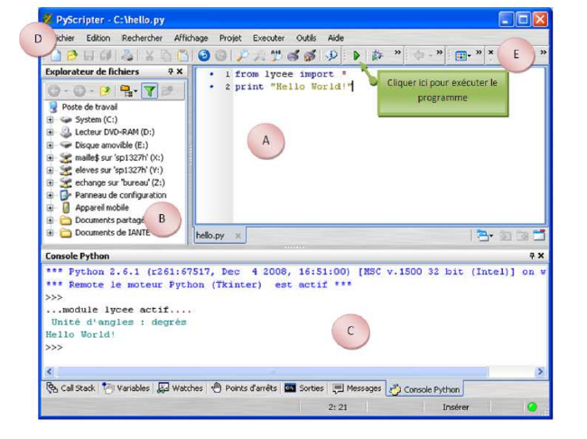

Python est un langage de programmation, dont la première version est sortie en 1991. Créé par Guido van Rossum, il a voyagé du Macin- tosh de son créateur, qui travaillait à cette époque au Centrum voor Wiskunde en Informatica aux Pays-Bas, jusqu’à se voir associer une organisation à but non lucratif particulièrement dévouée, la Python Software Foundation, créée en 2001. Ce langage a été baptisé ainsi en hommage à la troupe de comiques les « Monty Python ». Python est un langage puissant, à la fois facile à apprendre et riche en possibilités. Dès l’instant où vous l’installez sur votre ordinateur, vous disposez de nombreuses fonctionnalités intégrées au langage. Il est, en outre, très facile d’étendre les fonctionnalités existantes. Ainsi, il existe ce qu’on appelle des bi- bliothèques qui aident le développeur à travailler sur des projets particuliers. Plusieurs bibliothèques peuvent ainsi être installées pour, par exemple, développer des interfaces graphiques en Python.
EduPython est une distribution clé en main et portable téléchargeable à l’adresse : https://edupython.tuxfamily.org. Il suffit de cliquer sur l’onglet téléchargement pour télécharger la version 2.6. Edupython comprend la version 3.4 de python et de nombreux outils comme l’éditeur PyScripteur et des bibliothèques : PIL (traitement d’images), Turtle (tortue), Pygame (réalisation de jeux), Pyknon(musique). . .
La fenêtre de l’éditeur PyScripteur est composée de plusieurs zones :

Comme la coutume l’exige, notre premier programme sera l’affichage du texte "Hello World". Pour cela :
print("Hello World") #affiche le texte entre parenthèses
Remarque : il est possible (et fortement conseillé) d’inclure des commentaires dans les lignes de code, ils doivent être précédés de # afin qu’ils ne soient pas interprétés, ce qui sinon provoquerait un message d’erreur
>>>
*** Console de processus distant Réinitialisée ***
>>>
Hello World
>>>
Exercice écrire un programme qui affichera votre prénom à l’écran.
Définition du mot ordinateur d’après le dictionnaire Le Petit Larousse : « Machine automatique de traitement de l’information, obéissant à des programmes formés par des suites d’opérations arithmétiques et logiques. »
Qui dit traitement de l’information, dit donc données à manipuler. Un programme passe donc son temps à traiter des données. Pour pouvoir traiter ces données, l’ordinateur doit les ranger dans sa mémoire (RAM Random Access Memory). La RAM se compose de cases dans lesquelles nous allons ranger ces données (une donnée dans une case).
Une variable est un espace mémoire dans lequel il est possible de mettre une valeur. Par exemple, si en français je dis x est égal à 1, j’utilise la variable dont le nom est x pour lui fixer la valeur 1. Pour faire la même chose en Python, je note simplement : x = 1.
Cette opération est appelée "affectation" (ou "assignation"), et consiste à stocker une valeur en mémoire vive de l’ordinateur. On dit donc que l’on procède à l’affectation de la variable "x" avec la valeur "1". À l’aide à Edupython, testez le code suivant :
taille = 175 # j ’ assigne la valeur de 175 à la variable taille
print (taille)
Remarque : tout ce qui suit le symbole # ne sert qu’au lecteur du code. Cela s’appelle un commentaire. Comme vous pouvez le constater, la fonction print() permet d’afficher la valeur contenue dans la variable taille. Attention sur l’absence de guillemets, vous pouvez retester cet exemple avec :
Exercice que se passe-t-il lorsqu'on tape la ligne suivante :
print ("taille")
Exercice écrire un programme dans lequel on attribue la valeur 5 à la variable NbreBalle. La
valeur de NbreBalle doit
ensuite s’afficher à l’écran.
Un ordinateur est bien évidemment capable d’effectuer des opérations arithmétiques et mathématiques. Dans le tableau ci-après, sont présentés les symboles utilisés pour les opérations de base.
| Opérations | Symbole | Exemple |
|---|---|---|
| Addition | + | 3+5 donne 8 |
| Multiplication | * | 3*5 donne 15 |
| Soustraction | - | 7-2 donne 5 |
| division | / | 7/2 donne 3,5 |
| Reste de la division entière | % | 7%2 donne 1 |
| Quotient de la division entière | // | 7//2 donne 3 |
| Puissance | ** | 3**3 donne 9 |
Exercice écrire un programme qui multiplie le contenu de 2 variables. Par exemple : c=5 et d=9. Le résultat de cette opération devra être rangé dans une troisième variable (resultat). Votre programme devra afficher le contenu de la variable resultat.
Les variables peuvent contenir des types de données différents. Les différents types sont :
En Python les variables ont un type, mais le programmeur n’est pas obligé de préciser ce type. Il existe beaucoup de langages (C++, Java....) où l’utilisateur doit absolument définir le type d’une variable avant de pouvoir l’utiliser, faute de quoi cela entraînera une erreur.
La fonction type() vous permet de connaître le type d’une variable.
Remarque : l’utilisation du signe + ne se limite pas à l’addition. Il est aussi utilisé pour la concaténation. Le terme concaténation désigne l’action de mettre bout à bout au moins deux chaînes.
Exemple :
a="chaîne de "
b="caractères"
monExpression=a+b
print(monExpression)
a=input() # les parenthèses sont obligatoires
a=input("Nom :") # le texte dans les parenthèses permet
# d'indiquer ce que l ’ on attend
La commande input renvoie toujours à une chaîne de caractères. Pour affecter un nombre, il faut le convertir.
a=int(input("Nombre entier : " )) # pour un entier.
a=float(input("Réel : ")) # pour un réel.
Exemple :
a = int (input (" Donner une valeur entière : "))
x = float (input (" Donner une valeur réelle : ")
print("L’entier a vaut ",a, "et le réel x vaut ",x)
Exercice Faire un programme qui demande un nombre et qui affiche son carré.
Exercice écrire un programme qui demande la distance R (m) entre deux corps, la masse \(m_1\) et \(m_2\) (kg) de chacun des corps et qui calcule et affiche la force \(F\) (N) d’attraction gravitationnelle.
Données : \(F=G\times \dfrac{m_1 \times m_2}{R^2}\ avec\ G = 6.67.10^{−11} S.I.\)
Compléments : rechercher sur internet, la masse de la Terre, la masse de la Lune et la distance Terre/Lune et calculer la force gravitationnelle de la terre sur la lune à l’aide de votre programme. Vérifier ce résultat à l’aide de la calculatrice.